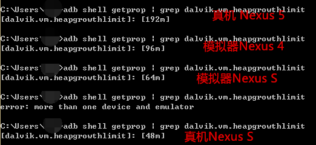

本節の導入：
前の節では、Bitmapの基本的な使い方を学びました。そして本節では、BitmapのOOM問題について考察します。実際の開発で、BitmapによるOOM問題に遭遇したことがある方も、ない方もいるかもしれません。本節ではこのテーマに沿って学んでいきます。OOMとは何か、なぜOOMが発生するのかを理解し、BitmapによるOOM問題を改善しましょう。
1. OOMとは何か？なぜOOMが発生するのか？
答え：Out Of Memory（メモリオーバーフロー）。Androidシステムは各APPに独立した作業スペース、つまり独立したDalvik仮想マシンを割り当てるため、各APPは互いに影響をとえずに独立して実行できます。またAndroidは各Dalvik仮想マシンに最大メモリ制限を設けており、現在使用中のメモリに申請したメモリリソースを加えたものがこの制限を超えると、システムはOOMエラーをスローします。さらに、ここでRAMと混同しないでください。現在のRAMの空きメモリが1G以上あっても、OOMは発生し得ます。RAM（物理メモリ）とOOMを混同しないように！また、RAMが不足した場合はアプリが強制終了されるだけで、単なるOOMではありません。そしてこのDalvikの最大メモリ基準は、機種によって異なります。次のように呼び出すことができます：
ActivityManager activityManager = (ActivityManager)context.getSystemService(Context.ACTIVITY_SERVICE);
Log.e("HEHE","最大内存：" + activityManager.getMemoryClass());
通常の最大メモリ基準を取得したり、コマンドラインで直接次のように入力したりできます：
adb shell getprop | grep dalvik.vm.heapgrowthlimit
システムソースの/system/build.propファイルを開いて、ファイル内のこの部分の情報を確認して得ることもできます：
dalvik.vm.heapstartsize=8m dalvik.vm.heapgrowthlimit=192m dalvik.vm.heapsize=512m dalvik.vm.heaptargetutilization=0.75 dalvik.vm.heapminfree=2m dalvik.vm.heapmaxfree=8m
注目すべき点は3つあります：heapstartsizeはヒープメモリの初期サイズ、heapgrowthlimitは標準的なアプリの最大ヒープメモリサイズ、heapsizeはandroid:largeHeapを使用するように設定されたアプリの最大ヒープメモリサイズです。
ここでは手元にあるいくつかの機種の通常の最大メモリ割り当て基準を試してみました：

自分の手元の端末でも試してみてください～
さて、余談はこの辺にして、OOM問題の発生についてはここまでにします。これ以上踏み込むとメモリ管理の話になってしまい、それは大きなテーマで、今は手に負えません... それでは、BitmapのOOMを回避するいくつかのテクニックを見ていきましょう！
2. BitmapによるOOMを回避するテクニックのまとめ
1）メモリ使用量の少ないエンコード方式を採用する
前の節で説明したBitmapFactory.Optionsこのクラスでは、その中のinPreferredConfig属性を設定できます。デフォルトはBitmap.Config.ARGB_8888、これを次のように変更できます。Bitmap.Config.ARGB_4444
Bitmap.Config ARGB_4444：各ピクセルは4ビットを占め、すなわちA=4、R=4、G=4、B=4、つまり1ピクセルは4+4+4+4=16ビットを占めます。
Bitmap.Config ARGB_8888：各ピクセルは8ビットを占め、すなわちA=8、R=8、G=8、B=8、つまり1ピクセルは8+8+8+8=32ビットを占めます。
デフォルトではARGB_8888が使用され、1ピクセルが4バイトを占めます！
2）画像圧縮
同じくBitmapFactory.Optionsで、次のようにしてinSampleSizeスケール倍数を設定します。例えば2と書くと、縦横が元の1/2になり、画像は元の1/4になります。スケールしない場合は1に設定すればOKです。しかし、むやみに圧縮してはいけません。この値が小さすぎると画像がぼやけてしまいますし、画像の引き伸ばしによる変形も避ける必要があります。そのため、プログラム内で動的にこのinSampleSizeの適切な値を計算する必要があります。Optionsにはまた次のようなメソッドがあります：inJustDecodeBounds、このパラメータをtrueに設定すると、decodeFileはメモリ空間を割り当てませんが、元の画像の縦横を計算できます。options.outWidth/outHeight画像の幅と高さを取得し、適切なアルゴリズムを通じて適切なinSampleSizeを得ることができます。ここで感謝を述べます"街神"さんが提供してくれたコード——鸿洋のblogからの引用です！
public static int caculateInSampleSize(BitmapFactory.Options options, int reqWidth, int reqHeight) {
int width = options.outWidth;
int height = options.outHeight;
int inSampleSize = 1;
if (width > reqWidth || height > reqHeight) {
int widthRadio = Math.round(width * 1.0f / reqWidth);
int heightRadio = Math.round(height * 1.0f / reqHeight);
inSampleSize = Math.max(widthRadio, heightRadio);
}
return inSampleSize;
}
そして上記のメソッドを以下のように使用すればOKです：
BitmapFactory.Options options = new BitmapFactory.Options();
options.inJustDecodeBounds = true; // 设置了此属性一定要记得将值设置为false
Bitmap bitmap = null;
bitmap = BitmapFactory.decodeFile(url, options);
options.inSampleSize = computeSampleSize(options,128,128);
options.inPreferredConfig = Bitmap.Config.ARGB_4444;
/* 下面两个字段需要组合使用 */
options.inPurgeable = true;
options.inInputShareable = true;
options.inJustDecodeBounds = false;
try {
bitmap = BitmapFactory.decodeFile(url, options);
} catch (OutOfMemoryError e) {
Log.e(TAG, "OutOfMemoryError");
}
3. 画像を適時に回収する
大量のBitmapオブジェクトを参照しているが、アプリはすべての画像を同時に表示する必要がない場合、一時的に使用しないBitmapオブジェクトを適時に回収できます。画像の使用状況が明確に分かっているシーンでは、能動的にrecycleして回収できます。例えば、ガイドページの画像は使い終わったらrecycle、フレームアニメーションは1枚読み込んで描画したら1枚解放する、といった具合です。使用時に読み込み、表示しない場合は直接nullまたはrecycleにします。例：imageView.setImageResource(0); ただし、特定の画像が繰り返し読み込み、解放、再読み込みされるなど、非効率な状況が発生する場合もあります...
4. その他の方法
以下の方法は、私は実際に使ったことがありませんが、各自で関連資料を調べてみてください：
1. SoftReference参照方式で画像リソースを簡単に管理する
SoftReferenceのhashmapを作成します。画像を使用する際は、まずこのhashmapにsoftreferenceがあるか、softreference内の画像が空でないかを確認します。空であれば画像をsoftreferenceに読み込んでhashmapに追加します。コード内で画像の回収と解放を明示的に処理する必要はなく、gcが自動的にリソースの解放を処理します。この方式はシンプルで実用的で、前の方法の読み込みと解放の繰り返しによる非効率さをある程度回避できます。ただし、まだ十分に最適化されているわけではありません。
サンプルコード：
private Map<String, SoftReference<Bitmap>> imageMap
= new HashMap<String, SoftReference<Bitmap>>();
public Bitmap loadBitmap(final String imageUrl,final ImageCallBack imageCallBack) {
SoftReference<Bitmap> reference = imageMap.get(imageUrl);
if(reference != null) {
if(reference.get() != null) {
return reference.get();
}
}
final Handler handler = new Handler() {
public void handleMessage(final android.os.Message msg) {
//加入到缓存中
Bitmap bitmap = (Bitmap)msg.obj;
imageMap.put(imageUrl, new SoftReference<Bitmap>(bitmap));
if(imageCallBack != null) {
imageCallBack.getBitmap(bitmap);
}
}
};
new Thread(){
public void run() {
Message message = handler.obtainMessage();
message.obj = downloadBitmap(imageUrl);
handler.sendMessage(message);
}
}.start();
return null ;
}
// 从网上下载图片
private Bitmap downloadBitmap (String imageUrl) {
Bitmap bitmap = null;
try {
bitmap = BitmapFactory.decodeStream(new URL(imageUrl).openStream());
return bitmap ;
} catch (Exception e) {
e.printStackTrace();
return null;
}
}
public interface ImageCallBack{
void getBitmap(Bitmap bitmap);
}
2. LruCache + SDカードのキャッシュ方式
Android 3.1以降、公式はLruCacheを提供してキャッシュ処理を行っています。保存されているImageのサイズがLruCacheの設定値を超えると、最も最近の使用回数が少ない画像が回収され、システムが自動的にメモリを解放します！
使用例：
手順：
1）まずキャッシュ画像のメモリサイズを設定する必要があります。ここではスマートフォンのメモリの1/8に設定しています。スマートフォンのメモリの取得方法：int MAXMEMONRY = (int) (Runtime.getRuntime().maxMemory() / 1024);
2）LruCache内のキーバリューペアはそれぞれURLと対応する画像です。
3）sizeOfというメソッドをオーバーライドし、画像の数を返します。
private LruCache<String, Bitmap> mMemoryCache;
private LruCacheUtils() {
if (mMemoryCache == null)
mMemoryCache = new LruCache<String, Bitmap>(
MAXMEMONRY / 8) {
@Override
protected int sizeOf(String key, Bitmap bitmap) {
// 重写此方法来衡量每张图片的大小，默认返回图片数量。
return bitmap.getRowBytes() * bitmap.getHeight() / 1024;
}
@Override
protected void entryRemoved(boolean evicted, String key,
Bitmap oldValue, Bitmap newValue) {
Log.v("tag", "hard cache is full , push to soft cache");
}
};
}
4）以下のメソッドはそれぞれ、キャッシュのクリア、画像のキャッシュへの追加、キャッシュからの画像の取得、キャッシュからの削除です。
削除とキャッシュのクリアは必ず行う必要があります。画像キャッシュの処理が適切でないとメモリオーバーフローが発生するため、必ず注意してください。
public void clearCache() {
if (mMemoryCache != null) {
if (mMemoryCache.size() > 0) {
Log.d("CacheUtils",
"mMemoryCache.size() " + mMemoryCache.size());
mMemoryCache.evictAll();
Log.d("CacheUtils", "mMemoryCache.size()" + mMemoryCache.size());
}
mMemoryCache = null;
}
}
public synchronized void addBitmapToMemoryCache(String key, Bitmap bitmap) {
if (mMemoryCache.get(key) == null) {
if (key != null && bitmap != null)
mMemoryCache.put(key, bitmap);
} else
Log.w(TAG, "the res is aready exits");
}
public synchronized Bitmap getBitmapFromMemCache(String key) {
Bitmap bm = mMemoryCache.get(key);
if (key != null) {
return bm;
}
return null;
}
/**
* 移除缓存
*
* @param key
*/
public synchronized void removeImageCache(String key) {
if (key != null) {
if (mMemoryCache != null) {
Bitmap bm = mMemoryCache.remove(key);
if (bm != null)
bm.recycle();
}
}
}
上記の内容は次の記事からの引用です——画像キャッシュのメモリキャッシュ技術LruCache、ソフト参照
本節のまとめ：
本節では、OOM問題の発生原因を説明し、ネット上で紹介されているBitmapによるOOMを回避するいくつかの方法をまとめました。筆者の会社で作っているAPPは地図系が多く、画像に触れることがほとんどないため、OOM問題に遭遇したことはなく、あまり詳しくありません～今後の上級コースのメモリ管理で、このOOM問題についてじっくり考えていきましょう。では、本節はここまでです。ありがとうございました～
クリックしてノートを共有
ノートは本記事の内容を拡張したものである必要があります！
記事投稿は、ここをクリックしてください
登録招待コードの取得方法
ノートを共有する前にログインが必要です！
登録招待コードの取得方法